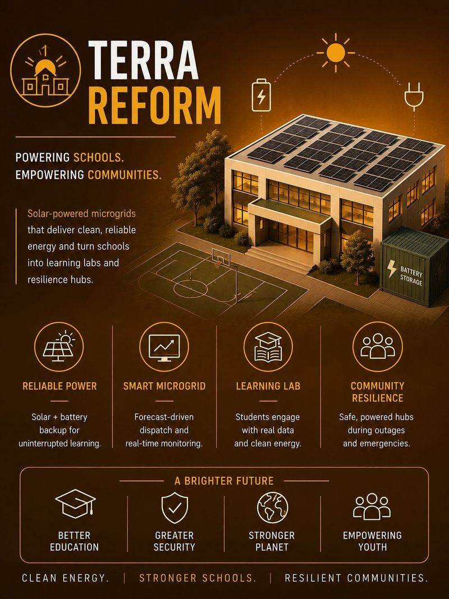
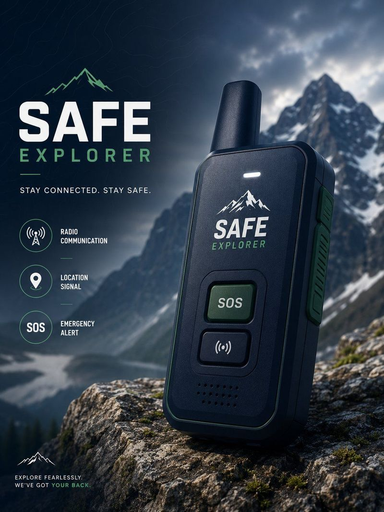
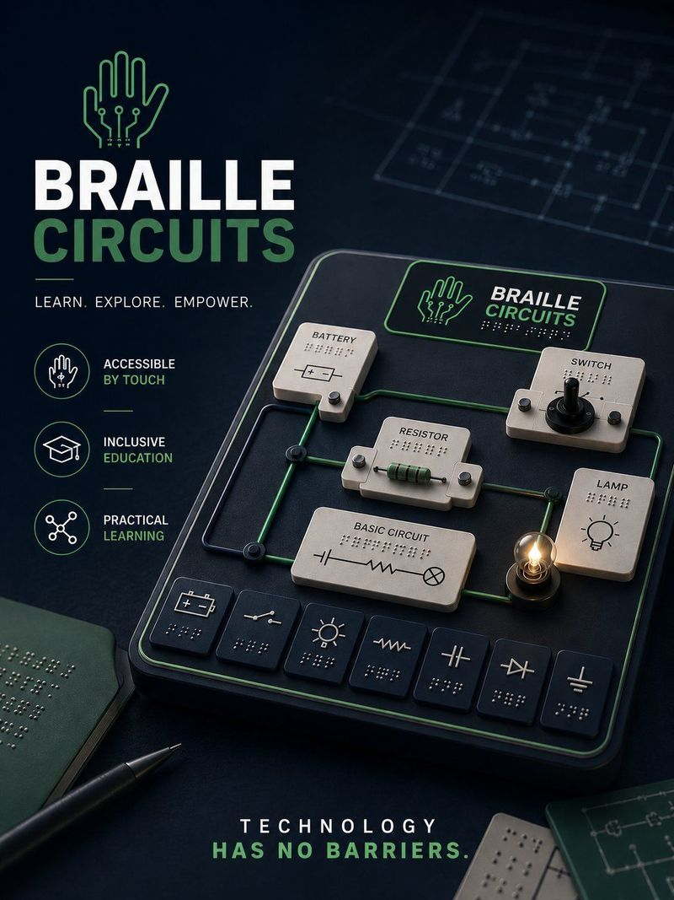
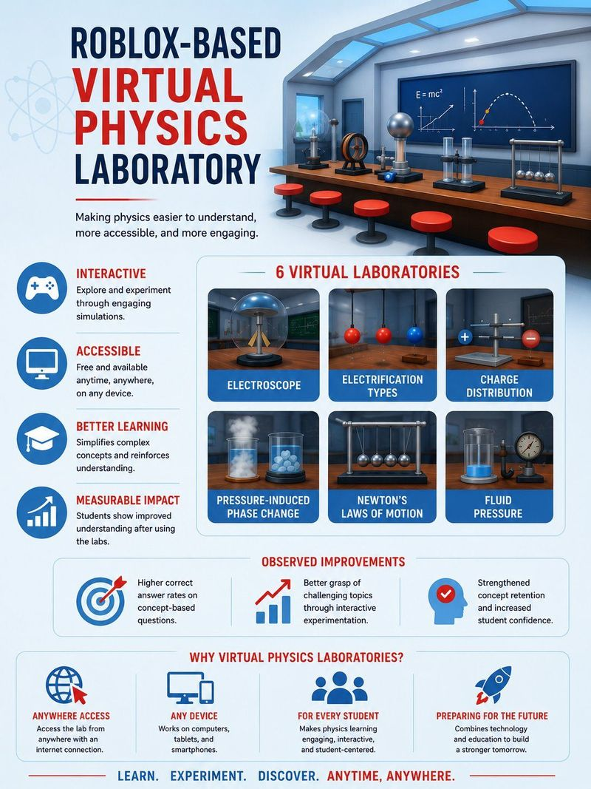
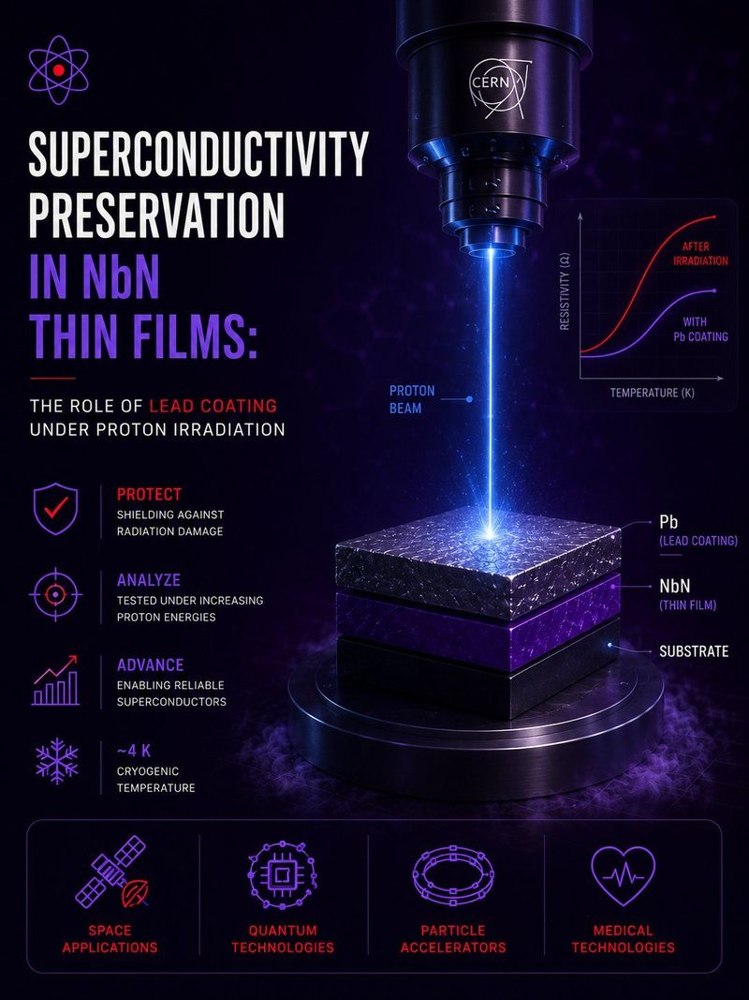
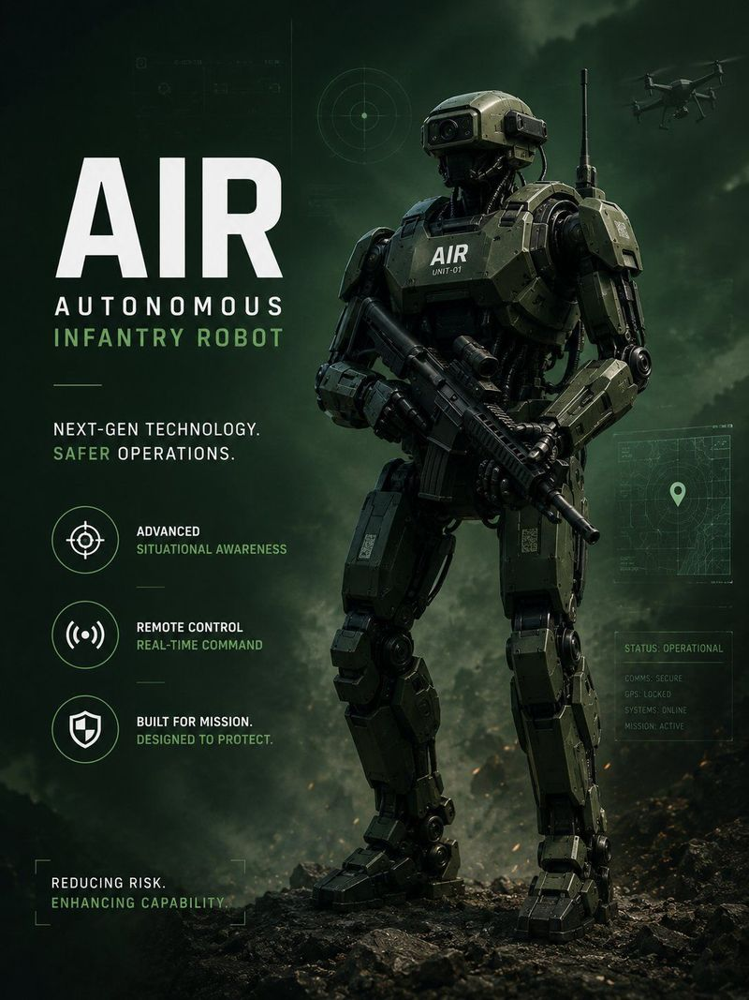
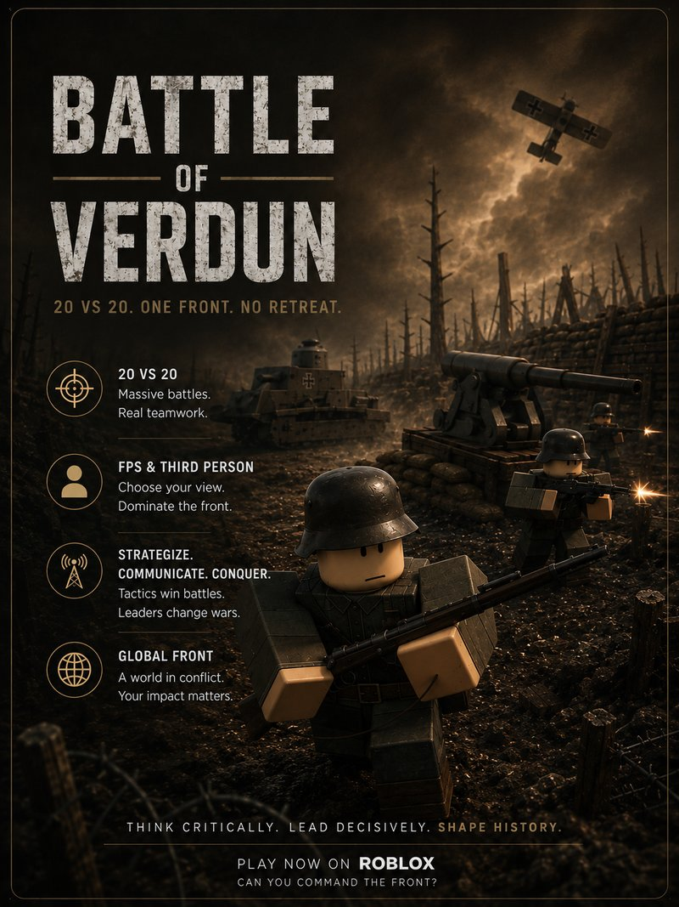

Terra
Reform
Genç liderliği, inovasyon ve küresel iş birliğiyle sürdürülebilir çözümler üretiyoruz.
Odak Alanları
Hangi Alanlarda Çalışıyoruz
Birbirine bağlı altı disiplin — kesişimlerinde uygulanabilir çözümler peşindeyiz.
Bilim
Araştırma odaklı deneyler, bilimsel sorgulama ve kanıta dayalı yarışma projeleri geliştirme.
Mühendislik
Teori ile pratik uygulama arasındaki boşluğu kapatan prototipler tasarlıyor ve üretiyoruz.
Sürdürülebilirlik
Uygulamalı araştırma ve inovasyon yoluyla çevresel ve toplumsal sorunlara çözümler geliştiriyoruz.
Yazılım Geliştirme
Gerçek dünya sorunlarını geniş ölçekte çözen dijital araçlar, simülasyonlar ve uygulamalar geliştiriyoruz.
Eğitim
Bilim ve teknoloji eğitimini her yerdeki öğrenciler için daha erişilebilir, ilgi çekici ve uygulamalı hâle getiriyoruz.
Erişilebilirlik
Eğitime, teknolojiye ve bilgiye erişimi herkes için genişleten kapsayıcı çözümler tasarlıyoruz.
Çalışmalarımız
Projeler
Yarışma başvuruları, araştırma önerileri, konsept çalışmaları ve simülasyonlar — olduğu gibi, dürüstçe sunuluyor.

Güneş Enerjili Okul Mikro Şebekesi
Okullara ve topluluklara dayanıklılık merkezi olarak hizmet veren temiz enerji üsleri oluşturmak için güneş enerjisi üretimini, batarya depolamayı ve enerji yönetimini inceleyen bir öneri.

Safe Explorer
Kullanıcılar ile merkezi koordinasyon istasyonları arasında telsiz tabanlı iletişim kuran, açık hava sporları ve uzak bölgeler için taşınabilir bir acil durum iletişim konsepti.

Braille Circuits
Görme engelli bireylerin elektrik devresi kavramlarıyla ve STEM eğitimiyle buluşmasını sağlamak için dokunsal Braille tabanlı gösterimler kullanan, erişilebilirlik odaklı bir proje.

Sanal Fizik Laboratuvarı
Simülasyonlar aracılığıyla uygulamalı fen eğitimini daha erişilebilir kılan, Roblox tabanlı etkileşimli bir sanal fizik laboratuvarı. TÜBİTAK 2204-A Bölge Finalisti.

CERN BL4S Projesi
NbN süperiletken ince filmleri proton ışınlamasından korumak için kurşun zırhlamayı inceleyen; uzay teknolojileri ve kuantum sistemlerinde uygulama alanları bulunan bir araştırma önerisi.

Askeri İnsansı Robot (AIR)
Sanal simülasyon prototipi olarak tasarlanıp işlev testleri yapılan, uzaktan kumandalı bir insansı robot konsepti — deprem arama kurtarma ve afet müdahalesinde kullanılması öneriliyor.

Battle of Verdun
Anatolia Studios tarafından Roblox üzerinde geliştirilen, geniş ölçekli 20'ye 20 çok oyunculu bir Birinci Dünya Savaşı deneyimi — uluslararası, öğrenci liderliğindeki bir iş birliğiyle inşa edilen siper savaşı ve tarihten esinlenen savaş alanları.
Yenileri Yolda
Bu projelerle sınırlı değiliz — Terra Reform yeni fikirler geliştirmeye ve yeni yarışmalara katılmaya devam ediyor. Bize katıl →
"Otuz üç yıllık eğitim hayatım boyunca pek çok başarılı öğrenciyle tanıştım. Ancak Deniz ve Mahmut, yalnızca akademik başarılarıyla değil; bilime duydukları tutku, üretme cesaretleri ve dünyayı daha iyi bir yer haline getirme istekleriyle bende gerçekten özel bir iz bıraktı. Bu platform, merak, azim ve güçlü değerlerle yönlendirildiklerinde genç zihinlerin neler başarabileceğinin yaşayan bir örneğidir."
Yolculuğumuz
Zaman Çizelgesi
İlk projemizden bugüne — Terra Reform hikâyesinin her adımı.
Terra Reform Kuruldu
Başlangıç — bağımsız, öğrenci öncülüğünde bir bilim ve teknoloji girişimi doğuyor.
Daha Fazlasını Keşfedin
Terra Reform'u Keşfedin
Kim olduğumuzu, hangi yarışmalara katıldığımızı, nasıl dahil olabileceğinizi ve bize nasıl ulaşacağınızı öğrenin.
Hakkımızda
Misyonumuz, vizyonumuz, yaklaşımımız ve geliştirdiğimiz her projeye yön veren temel değerlerimiz.
Daha Fazla Bilgi →Katıl
Öğrenci öncülüğünde uluslararası bir inovasyon ağının parçası olun ve üretmeye başlayın.
Dahil Ol →İletişim
Bir sorunuz, bir fikriniz mi var ya da iş birliği mi yapmak istiyorsunuz? Ekibimize ulaşın.
Bize Ulaşın →Gelişmelerden Haberdar Olun
Çalışmalarımızı Takip Edin
Yeni projeler, yarışma sonuçları ve katılım fırsatları hakkında ara sıra güncellemeler alın. Spam yok — yalnızca önemli gelişmeler.